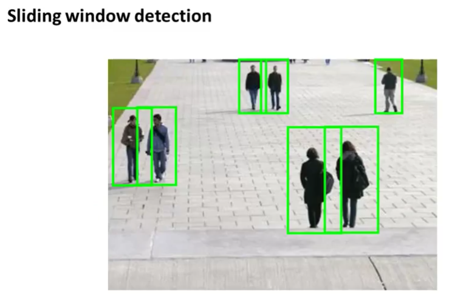
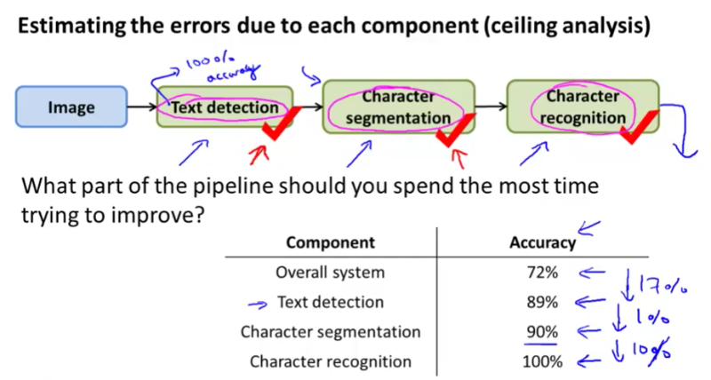

This week’s machine learning course is about Machine Learning Pipeline.
It’s a system with many stages / components, several of which may use machine learning. When dealing with complex real world problems. Oftentimes, in order to solve one problem, we need to solve multiple sub-problems. For example, one way to solve Photo OCR (Optical Character Recognition) problem is to solve the following sub-problems:
- Text detection
- Character segmentation
- Character classification

Each of the above sub-problems also involves using machine learning (classification). Text detection uses Sliding Windows detection.

How can we know which stage / component is more important, on which we should spend more time?
By using Ceiling Analysis, we can tell which part of the pipeline is more important, which we should work on next. If we have a single numeric evaluation that tells us how good our global pipeline performance is, then we can imagine what if one of the stages worked perfectly, what would the global performance be in that case? If the global performance improved a lot, that means it’s the right stage / component to work on next. If the global performance doesn’t improve that much, it means even we spend a lot of time making the stage / component perfect, we still can’t improve the global performance that much.

In the above figure, we clearly see by making the Text detection stage perfect, we would improve 17% of the global accuracy. That means we should spend more time working on improving Text detection, than say, working on Character segmentation, which would improve only 1% global accuracy.